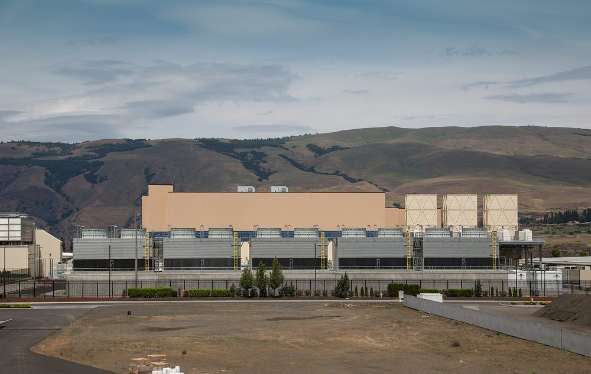
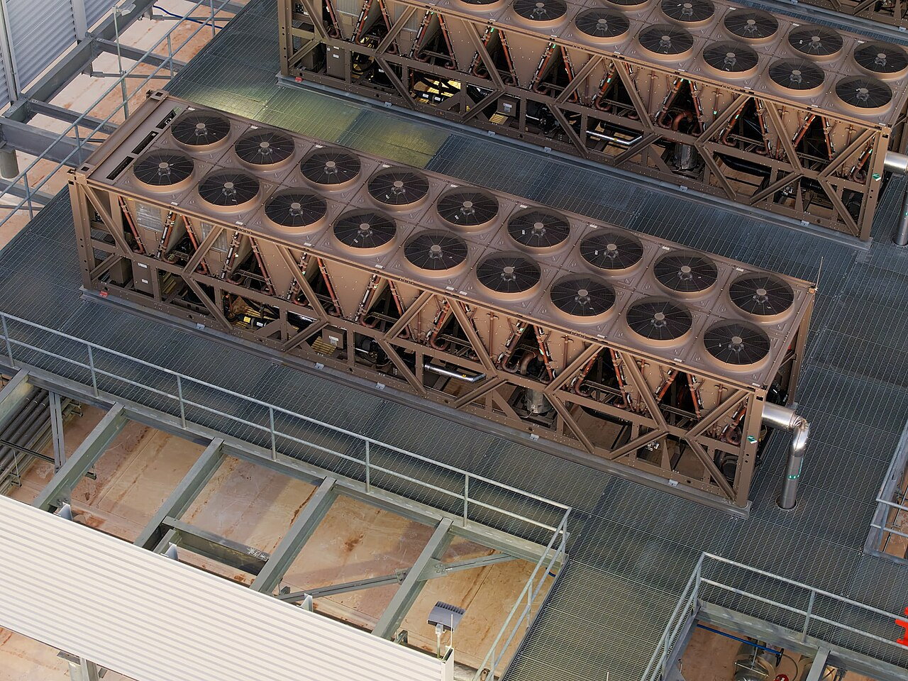
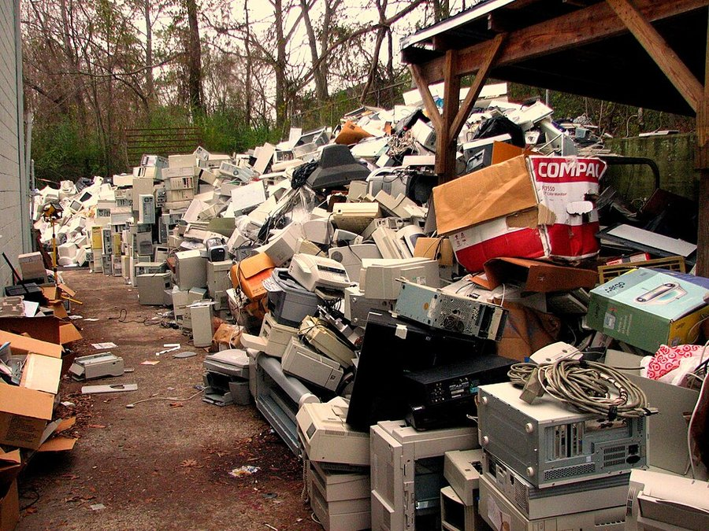
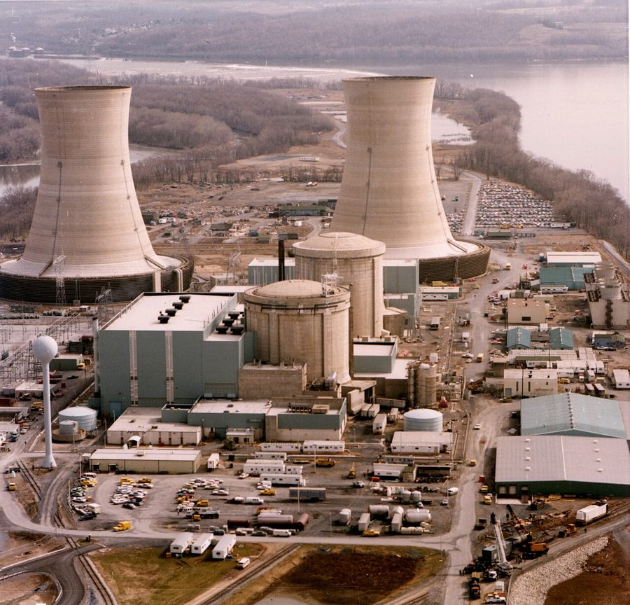
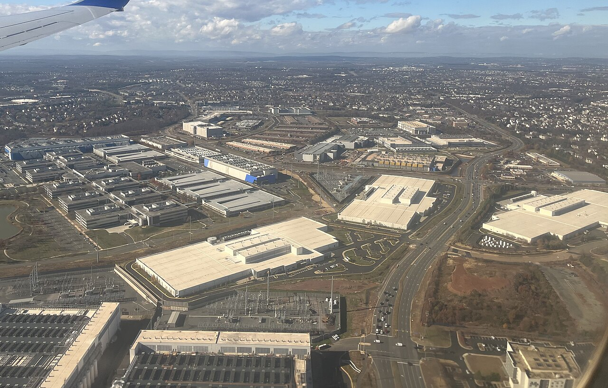
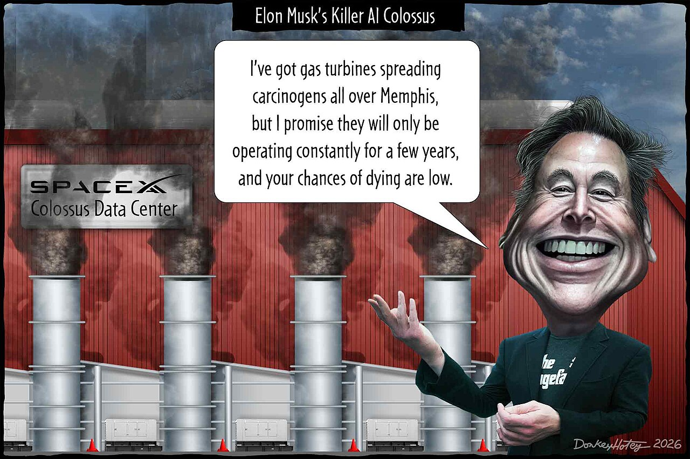

- Explain what infrastructure is and why it's part of every AI system: it holds the data and runs the model.
- Show that streaming, social feeds, recommendation systems, and chatbots all run in the same kind of building, and why a chatbot request takes more work.
- Separate training cost from inference cost for both predictive and generative AI.
- Define an externality and the disclosure gap, and find each in the AI buildout.
- Run the five critical AI questions on the move to nuclear power, and name what your decision costs.
The question, and the point of this chapter
Every time we ask a chatbot a question, scroll TikTok, or stream a show, a computer somewhere does the work. That computer sits in a building, and the building runs on electricity and water. So what's the deal with AI and the environment? You've probably heard both versions: AI is boiling the oceans, or one prompt uses less than a lightbulb. This chapter sorts out what's actually true.
Three things are true at once. First, AI has a physical side most people never see: infrastructure, the buildings, chips, power lines, and cooling systems that hold the data and run the model. Second, AI isn't the only thing in those buildings. Netflix, TikTok, Spotify, and email run there too, and the feeds and recommendations on those apps are AI as well, the predictive kind from Chapter 3. It's all one building. Third, generative AI is the newest and heaviest work in that building, and it's the main reason so many new ones are being built, some of them now powered by nuclear plants.
So the question for the week comes in three parts. What does all of this cost the physical world? Who pays for it? And why is it so hard to get a straight answer?
The point of this chapter, in one sentence: every AI system runs on infrastructure, the same buildings run everything else we do online, and AI's cost is small per use, large in total, shared with every app on your phone, and hard to see, because the companies that know the numbers mostly don't publish them.
The concepts: infrastructure, one building, two costs, who pays, what's improving, clean energy, and the rules
2.1 Infrastructure: the part of the AI system you never see
In Chapter 1 we described every AI system with five parts: data, model, output, feedback loop, and humans. That model still works. This chapter adds one thing underneath it. The data has to be stored somewhere, and the model has to run somewhere. Infrastructure is what holds the data and runs the model: the building, the chips, the power, and the cooling. You never see it when you use an app, but no AI system exists without it.
That building is a data center: a building full of computers that other people use over the internet. Companies call this the cloud, or cloud computing, but that's a marketing term. There is no cloud. There are buildings, and somebody owns them. For most of computing's history, companies ran their own server rooms. Starting in 2006, when Amazon began renting out computing power, followed later by Microsoft and Google, that work moved into a small number of enormous shared buildings run by a few companies. That's what the cloud really means: renting time on someone else's computers, in someone else's building. Every show we stream, every photo that backs up from our phones, every email, and every social feed runs there, and the feed is already AI: the recommendation system from Chapter 3, choosing what you see next.

A data center needs two things: electricity to run the chips, and a way to get rid of the heat they make. A chip turns almost all the electricity it uses into heat, so the more computing a building does, the hotter it gets. Cooling is where the water comes in. One common method, evaporative cooling, works the way sweating cools you down: water runs past the hot equipment, some of it evaporates, and the evaporating water carries the heat away. That water is gone. The other main option is a closed water loop: the same water circulates past the chips and back through a chiller, over and over, like the coolant in a car's radiator. Almost none of it evaporates, but running the chillers takes more electricity. So every data center trades water against electricity. There's a second water cost too: power plants use water to make the electricity, and researchers at UC Riverside who study AI's water use count both. That's why building a data center in a hot, dry place is a very different decision than building one somewhere cool and wet, and why MIT Technology Review followed the data center boom into the Nevada desert.

You run a data center for a day. Pick what's running, how busy it is, how the building cools itself, and where it is. Then press Run the day and watch the servers work, the chips heat up, and the cooling add up in electricity and water.
How the settings work, and what the meters mean
The idea in one line: the work the chips do makes heat, and the cooling system has to carry that heat away. If the heat is bigger than what the cooling can handle, the chips overheat.
What's running sets how hard each chip works. Streaming mostly sends a file that already exists, so it's light. A social feed runs a recommendation model on every swipe, so it's heavier. A chatbot computes a brand-new answer word by word, heavier still. AI video is by far the heaviest. More work means more electricity, and nearly all of that electricity turns into heat.
How busy multiplies that work. A viral moment means far more people asking at once, so far more heat at once.
How the building cools sets how much heat can be removed. Fans only blow air over the chips: no water, but they can only carry away a little heat. Evaporating water carries away the most heat for the least extra electricity, but the water that evaporates is gone. A closed water loop sends the same water past the chips and back through a chiller, again and again: almost no water lost, but the chiller uses extra electricity.
Where it is changes how well cooling works. Fans struggle in hot air, a desert evaporates more water for the same cooling, and chillers work harder in the heat.
The meters: Chip temperature is how hot the chips are running. Real chips protect themselves by slowing down when they get too hot, so "overheating" means slower answers, not a fire. Electricity used is the power for the chips plus the extra power for cooling. Water evaporated is the cooling water that turns to vapor and leaves the building. None of the meters shows the water the power plant used to make the electricity.
Try this: set AI video and something goes viral with fans only, press Run the day, and watch it overheat. Then switch the cooling, run it again, and watch which meter goes up instead.
A simple model, not a measurement. The order is real: feeds take more computing than streaming, chatbot answers more than feeds, and AI video far more than text. The temperatures and amounts are made up to show the trade-offs. Nothing is saved.
Here's what people get wrong about infrastructure: they picture the cloud as nowhere. It's somewhere, with a street address, a power bill, and neighbors. When you think about any AI system in this book, the infrastructure is part of the system, even though it never shows up on your screen.
2.2 One building, every app
Here's the part most people miss: the building doesn't care what kind of app is asking. Streaming a show, scrolling TikTok, getting a Spotify playlist, and asking ChatGPT a question can all run in the same kind of building. Some new data centers are built only for AI, and we'll get to those in the case. But the big cloud data centers that most apps rent from run all of it side by side. So all of us already have a data center footprint, and we had one long before chatbots. An hour of streaming video came to roughly 36 grams of CO2 in the International Energy Agency's 2019 estimate, counting the data center, the network, and the screen.
And a lot of what we already do is AI. Every swipe on TikTok runs a recommendation system deciding what to show you next, and Spotify does the same with your next song. Those are the predictive AI systems from Chapter 3. They run on every swipe, for every user, all day, and they have a footprint too. We just never called it an AI footprint.
What's different about a chatbot is how much work each request takes. Picture three requests. When you stream a show, the data center finds a video file that already exists and sends it to you. When you scroll a feed, a recommendation model ranks what comes next for you. When you ask a chatbot a question, the data center computes an answer that has never existed before, one word at a time. Same building, three very different amounts of work.
You can see the change in the electricity numbers. US data centers used about 60 terawatt-hours of electricity a year from 2014 through 2016, a flat line, because the buildings kept getting more efficient as everyone went online. Then the line started climbing: 176 terawatt-hours by 2023, about 4.4 percent of all US electricity, and the Berkeley Lab report says the jump came largely from servers built for AI. AI chips draw two to four times the power of ordinary server chips. Worldwide, the International Energy Agency expects data center electricity to more than double by 2030, with AI the main driver.
Infrastructure wears out: e-waste
Every server, phone, and laptop eventually becomes electronic waste, or e-waste. The world already makes a lot of it: a record 62 million tonnes in 2022, growing five times faster than recycling, according to the UN's Global E-waste Monitor. Most of it is phones, screens, laptops, and appliances, not AI servers. But a 2024 study estimated that generative AI alone could add 1.2 to 5 million tonnes by 2030, as faster chips push older ones out.

So where does it go? Less than a quarter is documented as properly collected and recycled. About as much again is simply thrown away, mostly into landfills. And the same UN report estimates that around 18 million tonnes are handled mostly by informal workers in lower-income countries without proper recycling systems, where burning and stripping electronics releases toxic substances like mercury. Some of it gets there by ship: about 3.3 million tonnes a year move from richer countries to poorer ones in ways nobody tracks. That's an externality from section 2.4, on a global scale.
Here's the part you control. For a phone, most of the environmental cost is in making it, not using it. Apple's own report put production at 80 percent of an older iPhone's lifetime emissions, and production is still the biggest share for its newest models. So keeping your phone or laptop an extra year or two does more than skipping a few prompts.
Here's what people get wrong about AI's footprint: they think AI invented it, or that only chatbots count. Neither is right. The buildings were already running our feeds, our streams, and our backups, and the feeds are AI too. Generative AI didn't start the footprint. It's the heaviest new thing added to it.
2.3 Two costs: training and inference
Every AI system, predictive or generative, has two costs. Think of a factory. Training is building the factory: the one-time job of teaching a model, with thousands of chips running for weeks or months on huge amounts of data. Inference is running the factory: every time anyone uses the model, the chips run again to produce an answer, a ranking, or an image. TikTok's feed gets trained on billions of swipes, then runs inference every time you swipe. A chatbot gets trained on huge amounts of text, then runs inference every time you ask it something.
Training is the cost that makes headlines, and it's big: a 2025 review of published figures found training runs as large as 3,500 megawatt-hours for one of Meta's recent models. But it's paid once per model. Inference is tiny each time and never stops. Google measured a typical text prompt to its Gemini app at 0.24 watt-hours, about nine seconds of television. OpenAI's chief executive gave about 0.34 in a blog post, and independent researchers at Epoch AI landed near 0.3. That's about what a microwave uses in one second. But there are billions of those every day, which is why MIT Technology Review estimated that 80 to 90 percent of the computing power used for AI goes to inference.
Table 1 · From one prompt to a billion. A typical text prompt at about 0.3 watt-hours, scaled up with simple multiplication.
| Scale | Energy per day at 0.3 Wh a prompt, 20 prompts a person | Roughly the same as |
|---|---|---|
| You | 6 Wh | Charging your phone halfway |
| This class (45 people) | 270 Wh | One load of laundry, washed cold |
| All of WWU (about 16,000) | 96 kWh | Three US homes for a day |
| 800 million people, every day, for a year | 1.75 TWh | The yearly electricity of roughly 160,000 US homes |
And text is the cheap end. In MIT Technology Review's tests, one five-second AI video took more than 700 times the energy of one AI image. Turning on a "reasoning" mode, where the model works step by step before answering, raised energy use about 30 times on average in the AI Energy Score tests. And a lot of AI runs without anyone typing a question: summaries in your email, answers at the top of your search results, recommendations in every app.
The numbers are also moving the other way. Google reported that the energy for a typical Gemini prompt fell 33 times in one year, and AI can cut energy too: Google said in 2016 that DeepMind's software cut the energy used to cool its data centers by up to 40 percent. The catch is that cheaper answers get built into more apps, so total use can still rise.
Here's what people get wrong about training and inference: they argue about one prompt. "A prompt uses less than a lightbulb" and "a prompt is boiling the oceans" are both about one question. The real story is small, times billions, times every day, across every app in the building.
2.4 Who pays, and who's counting
Here's a question worth asking about your own electric bill: did a data center put something on it?
Who pays
Your prompt is free to you and profitable to the company. But if the data center that answered it raises the electric bill of a family two counties away, that family helped pay for your prompt and never got a say. Economists call that an externality: a cost, or a benefit, that lands on someone who wasn't part of the deal.
It's already happening, and the clearest example is PJM. PJM Interconnection is the organization that runs the power grid for 13 states and Washington, D.C., from Illinois to New Jersey, about 67 million people, including Northern Virginia, home to more data centers than anywhere on Earth. It doesn't own the power plants or sell you electricity. Think of it as the air traffic controller for the grid: it decides which plants run and makes sure there will be enough power. (The name comes from Pennsylvania, New Jersey, and Maryland, where it started.) To make sure there will be enough electricity in the future, PJM pays power plants to promise they'll be ready to run a few years from now. It sets that price once a year with an auction, and the cost gets passed on to everyone's electric bill. Recently, that price jumped about nine times. The grid's independent market monitor estimated that data centers caused 63 percent of that jump, about $9.3 billion.
And the new power lines and substations? In October 2026, NPR reported that everyone who buys electricity helps pay for them, including renters who never knowingly use AI.
- The grid's market monitor puts 63 percent of PJM's price jump on data centers.
- An electrical engineering professor told NPR that data centers are asking for an unusual amount of new power all at once.
- Big customers like data centers pay less per kilowatt-hour than households do.
- A utilities consultant told NPR that data centers are taking the blame for over a decade of grid underinvestment.
- Demand was already growing from people plugging in electric cars and heat pumps.
- An industry-funded study found that from 2015 to 2024, more data centers went along with slightly lower prices, and SemiAnalysis blames the auction's rules.
- Neighborhoods near data centers can get a sturdier grid with fewer outages.
The honest answer: both. Data centers are adding a lot of new demand fast, on a grid that needed work anyway. How the bill gets split is a choice regulators make.
Who's counting
So how much does each app actually cost? Mostly, we can't check. There's no standard for reporting it.
Google has published one number, for one product. OpenAI's chief executive gave a figure in a blog post without saying how it was measured. Mistral, a French AI company, published a full study of one model. For most other AI products, and for the recommendation systems behind TikTok or YouTube, there's no public per-use number at all.
That's the disclosure gap. The companies have the numbers, because they pay the power bill. The public mostly doesn't.
And when there's no real number, a guess fills the space. The famous claim that a chatbot question uses "ten times a Google search" rests, as researchers who traced it found, on a secondhand 2023 remark and a Google blog post from 2009. About half the news articles they checked repeated it anyway.
Here's what people get wrong about who pays: they think the cost is a side effect. It's a transfer. Someone pays, someone gains, and the person paying didn't agree to it. And when two estimates differ by ten times, the useful move isn't picking one. It's asking who has the real number and why it isn't public.
2.5 Are things getting better?
So, are things getting better? The honest answer has two halves. Per use, yes, and fast. In total, not yet. In its April 2026 report, the International Energy Agency said the electricity needed for each AI task is falling at a rate it called unprecedented in the history of energy. Google reported the energy for a typical Gemini prompt fell 33 times in one year, and its 2025 environmental report says its data centers use 84 percent less overhead energy, the power spent on cooling and keeping the lights on, than the industry average.
Water and power are improving too. Since August 2024, every new data center Microsoft designs uses a closed water loop at the chip instead of evaporating water, starting with sites in Phoenix and Wisconsin in 2026; Microsoft says each one will avoid more than 125 million liters of water a year, though the chillers use more electricity. Google says its data center emissions fell 12 percent in 2024 even as their electricity use rose 27 percent, because it bought more clean power. And the move to nuclear is growing: the IEA counts 45 gigawatts of planned deals between data center operators and small nuclear reactor projects, up from 25 a year earlier.
Now the other half. The same IEA report found data center electricity use grew 17 percent in 2025, and AI-focused data centers grew 50 percent. It expects data center electricity to roughly double by 2030, and it notes that many new US projects are being built with their own natural gas power plants. Google's own report says its total emissions still rose 11 percent, because building data centers and making servers creates emissions too, and its 12 percent drop counts clean power it bought on contract, not only what flows into the building. The IEA also calls for more systematic energy disclosure from tech companies, which is section 2.4's point coming from the world's main energy agency.
Here's what people get wrong about progress: they hear "more efficient" and assume "smaller footprint." Each answer is getting much cheaper, and that's real progress. But cheaper answers get built into more apps and used more often, so the total keeps climbing. Both things are true at once, and a fair view of AI and the environment holds both.
2.6 Is AI speeding up the shift to clean energy?
First, two terms that get mixed up. Renewable energy comes from sources nature keeps refilling: sunlight (solar panels), wind (wind turbines), moving water (hydropower dams, like the ones on the Columbia River that power much of Washington), and heat from inside the earth (geothermal). Nuclear power is not renewable, because it runs on uranium, which is mined and will eventually run out. But nuclear is low-carbon: it barely releases CO2 while it runs. Clean energy is the looser term people use for both, renewables plus nuclear, and you'll see companies use it that way. Keep those three straight and a lot of headlines get easier to read.
Now the claim: is AI speeding up the shift to clean energy? You'll hear it a lot, so let's check it. Part of it is true.
In 2025, Amazon, Meta, Google, and Microsoft signed 49 percent of all the clean power deals companies made worldwide, according to BloombergNEF. That includes 4.7 gigawatts of nuclear power from Meta and Amazon alone. Tech companies are now clean energy's biggest corporate customers, and their long contracts help new projects get built.
But buying clean power isn't the same as running on clean power. The electricity data centers use worldwide is still mostly coal and gas, and the IEA notes that many new US projects are building their own gas plants. A contract for a solar farm in one state doesn't change what the grid next to a data center is burning at 2 a.m. BloombergNEF also points out that proposed accounting rules would track clean power hour by hour, which would make "100 percent renewable" claims harder to justify.
Is nuclear clean energy?
It depends on what you mean by clean. On carbon, yes. A 2022 United Nations study of the whole life cycle, from mining to building to shutting down, found nuclear produces about 5 to 6 grams of CO2 per kilowatt-hour of electricity, the lowest of any source it studied. Wind is close behind. Coal is roughly 750 to 1,100.
On waste, it's harder. Used nuclear fuel is one of the most hazardous substances people make, according to the US Government Accountability Office, and the US has no permanent place to put it, so it's stored at the reactor sites. Add the cost and the years it takes to build a plant, and you can see why some people call nuclear clean energy and others won't. They're describing the same plant.
So, is AI speeding up the shift to clean energy? It's speeding up the money going into clean energy, especially nuclear. It's also speeding up demand for gas while the cleaner plants get built. Which one wins depends on rules and choices, not on AI itself.
Here's what people get wrong about clean energy: they treat "clean" as a yes or no. A power source can be very low-carbon and still leave dangerous waste, and a company can buy clean power while its building runs on gas. The better questions are: clean by what measure, and where is the power actually coming from?
2.7 Who sets the rules, and what could they be?
Every problem in this chapter, the neighbor's bill, the missing number, the gas filling the gap, runs into the same question: who gets to make the rules? Right now, mostly nobody, or everybody a little.
What exists now
In Congress, the Artificial Intelligence Environmental Impacts Act of 2024 would have set up a voluntary reporting system for AI's environmental effects. It didn't become law. In 2026, seven tech companies signed a White House pledge to pay for their own power and grid upgrades. It's voluntary, with no enforcement.
So the states moved first. New Jersey passed a law making large data centers pay for their own grid upgrades, and a second law requiring them to report their energy and water use every six months. New York became the first state to pause new data center development for a year. Europe is further along: the European Union already requires every data center over 500 kilowatts to report its energy use to a central database, and its AI Act asks makers of the biggest AI models to document the energy used to train them.
What rules could look like
Pull this chapter together and there are four kinds of rules on the table. Each one costs somebody something.
- Report it. Every large data center publishes its energy, water, and e-waste, on a schedule. The cost: companies give up numbers they'd rather keep private, and can be held to them.
- Price it. Big data centers pay for their own grid upgrades instead of spreading the cost to neighbors. The cost: higher prices for the companies, and some buildings may move to states without the rule.
- Ask first. Towns get a real say before a data center is permitted, including the right to say no. The cost: slower building, and lost tax revenue if the town says no.
- Label it. Apps and AI models get an energy rating, like the stickers on refrigerators. The cost: a fight over what to measure, and paperwork for every company.
Rules for AI, or rules for all technology?
Notice that almost every rule that has passed is about buildings, not AI. Should it be? There's a real case for AI-specific rules. Some data centers exist only for AI: xAI's Colossus in Memphis was built to train and run Grok. The IEA tracks these AI-focused data centers separately, and expects their electricity use to roughly triple by 2030, close to all the conventional data centers combined. They're the fastest-growing part of the footprint, and they're easy to point to.
But they aren't the whole picture. Many of the biggest cloud data centers run AI right next to streaming, storage, and social feeds, and their meters can't tell those apart. Some heavy users aren't AI at all: when the federal government tried to survey cryptocurrency miners' power use in 2024, the industry sued, and the government dropped the survey. Most of the world's e-waste is phones and laptops. And of McKinsey's projected $7 trillion in data center spending, $1.5 trillion is for buildings that aren't built for AI. A rule that only counts "AI" leaves all of that out, and gives companies a reason to argue their work isn't really AI.
The strongest objection: building rules hide what happens inside. A data center running quick searches and one running long AI reasoning can report the same total while doing very different work. That's why researchers want a floor for all technology, every large building reports, plus extra detail for the services where one request can cost thousands of times another, with AI first in line.
Here's what people get wrong about regulating this: they think it has to be one or the other. It doesn't. A floor for every large data center counts the whole footprint, and extra rules for AI-focused data centers aim at the part growing fastest. Doing both is harder, and it's the honest version.
- Infrastructure is part of every AI system. It holds the data and runs the model, in a building with a power bill, a water bill, and neighbors.
- It's all one building. Streaming, social feeds, recommendations, and chatbots share it, and the feeds are AI too.
- Generative AI is the heaviest new work in the building. Writing a new answer takes far more computing than sending a file.
- Infrastructure wears out. E-waste is growing five times faster than recycling, much of it ends up in landfills or with informal workers in poorer countries, and keeping your devices longer is one of the few things you control.
- Two costs. Training builds a model once. Inference runs it every time anyone uses it, and that's most of the total.
- Someone else can pay. Grid costs land on everyone's electric bill, and the real per-app numbers mostly aren't public.
- Better per use, bigger in total. Each AI answer is getting much cheaper, but total use keeps growing.
- AI is pulling money into clean energy, including nuclear, while gas often fills the gap in the meantime.
- Rules mostly count buildings, not AI. AI-focused data centers are growing fastest, but they're not the whole footprint. Four kinds of rules are on the table: report it, price it, ask first, and label it, and each one costs somebody something.
1. A company spends four months and $300 million running 50,000 chips to build its next model.
Training. One big cost, paid once, then spread across everything the model ever does.
2. A music app picks your next song every time one ends, for every listener, all day.
Inference, from predictive AI. Nobody typed a prompt, and it still runs in a data center every time. Recommendation systems have a footprint too.
3. A county approves a data center; two years later, households in the next county see a new charge on their electric bills.
Who pays. An externality: a cost landing on people who weren't part of the deal.
4. A streaming service, a social app, and a chatbot all rent space in the same building in Oregon.
One building. The building doesn't care what kind of app is asking. Their footprints share a power bill and a water supply.
5. A startup says its AI "lives in the cloud," but its servers sit in a rented building in eastern Washington.
Infrastructure. The cloud is a building. It holds the data, runs the model, and has neighbors.
The main case: AI's hunt for power, from Three Mile Island to Memphis
This case is about the idea the whole chapter rests on: AI needs infrastructure, and right now it needs more power than the grid has to spare. Follow how AI companies are getting that power, and you'll see both edges of the story. In Pennsylvania, Microsoft is bringing a closed nuclear plant back to life. In Memphis, xAI ran gas turbines in a neighborhood that never asked for them. Same hunger for power, two very different answers.
Background The scramble for power, from nuclear plants to gas turbines
Three Mile Island comes back
On September 20, 2024, a power company called Constellation announced it would restart a nuclear reactor in Pennsylvania that had been shut down for five years because it lost money. The plant was Three Mile Island, the site of the worst nuclear accident in American history, in 1979. The reactor being restarted wasn't the one that failed, but the name made the headline. The customer made the story: Microsoft signed a twenty-year contract to buy the plant's entire output, 835 megawatts, to power its data centers.

Why would a software company do that? Because AI needs power that never switches off, in amounts no ordinary customer asks for, and nuclear plants run around the clock without burning fossil fuel. The grid didn't have that power to spare, so Microsoft paid to bring it back.
The rush to nuclear
It wasn't a one-off. Here's who else is betting on nuclear power for data centers.
Table 2 · The rush to nuclear, at a glance. Deals between tech companies and nuclear power, as of October 2026.
| Company | The deal | Where it stands |
|---|---|---|
| Microsoft | Restart Three Mile Island and buy all its power for 20 years, backed by a $1 billion federal loan | Aiming for as early as 2027 |
| Amazon | Bought a data center campus next to a Pennsylvania nuclear plant | Existing plant, already running |
| A fleet of small reactors from Kairos Power | Not built yet | |
| Meta | Deals with Oklo, TerraPower, and Vistra, more than 6 gigawatts | Existing Vistra plants now; small reactors aimed for around 2030 or later |
| Amazon | Four small reactors in central Washington with X-energy and Energy Northwest | Planned, with the option to triple |
| Valar Atomics | About 456 small reactors on federal land in Utah | A proposal under review; its test reactor has powered one chip |
Most of the newer bets are on small modular reactors, or SMRs: reactors much smaller than Three Mile Island's, designed to be built partly in factories, so that making many of them could bring the cost down. Across the industry, the IEA counts 45 gigawatts of planned deals between data center operators and SMR projects.
Here's the catch: none of these small reactors is running yet. The earliest target dates in these deals are around 2030, Oklo has struggled to get its design approved by the Nuclear Regulatory Commission, and the low costs these companies promise are still goals, not track records. The tech companies are paying now for power that may not arrive for years, which is part of why gas fills the gap in the meantime.
The money
Behind the reactors is a lot of money. Amazon, Microsoft, Alphabet, and Meta have each guided to capital spending of roughly $125 billion to $200 billion in 2026, most of it on data centers. The consulting firm McKinsey projects nearly $7 trillion in data center spending worldwide by 2030, about $5.2 trillion for buildings equipped for AI and $1.5 trillion for everything else. That second number is a reminder that the buildings aren't only for AI.
Meanwhile: gas and coal
Clean power is the hopeful part of the story, and it comes from two different places. Nuclear is the one in the headlines. But the bigger share is renewables, mostly solar and wind: the International Energy Agency expects renewables to meet nearly half of the growth in data center electricity through 2030, with nuclear's share growing later in the decade as new reactors come online. But reactors take years, and AI demand is arriving now. Today, by the IEA's count, the electricity data centers use worldwide is about 30 percent coal, 26 percent natural gas, 27 percent renewables, and 15 percent nuclear.
Memphis shows what that looks like on the ground. Elon Musk's AI company, xAI, the maker of the Grok chatbot, built a supercomputer there called Colossus, and powered it with up to 35 gas turbines, more than double the 15 it was permitted, in neighborhoods that are predominantly Black and already ringed by industry. After pushback, it removed the extras. Gas turbines release nitrogen oxides, which help form smog, and University of Tennessee researchers found the turbines had added to Memphis's air pollution. For a second data center it put turbines just across the state line in Mississippi, and in April 2026 the NAACP sued under the Clean Air Act. The company and Mississippi regulators say those turbines are temporary and don't need a federal permit; as of October 2026 the court hadn't ruled.
Coal is getting a second life, too. A 2026 study, not yet peer reviewed, found that of 50 US coal plants scheduled to retire before 2035, 20 had their retirement pushed back or dropped by January 2026, and that federal orders and utility filings for several of them cited data center growth. In Omaha, the local utility kept coal units running because closing them risked power shortages as nearby server farms grew, and in Georgia, Southern Company delayed retiring coal units at Plant Bowen. Not every delay is about data centers, since demand is rising for other reasons too, but data centers are often part of the reason. Coal is the dirtiest common way to make electricity, so every extra year counts.
Nuclear is the headline. Gas is often what arrives while the reactors are being built.
The backlash
Watch · about 13 minutes · opens CBS News60 Minutes: "Data center opposition a rare issue uniting Americans across the political divide"September 2026. Residents in Texas and Arizona on water, power, and land, and a CBS analysis that golf courses use more than twice as much water as data centers.The buildings have neighbors, and the neighbors are pushing back. A spring 2026 Yale survey found that a majority of registered voters, across party lines, expected their electric bill to rise if a data center opened nearby. A September 2026 PBS News, NPR, and Marist poll found that 65 percent of voters oppose building a data center in their own community, with Republicans and Democrats on the same side. In New Jersey, more than three dozen towns voted to block new data centers.

It's growing fast. In the first three months of 2026, local opposition blocked or delayed 75 data center projects worth about $130 billion, as many projects as in all of 2025, according to the research group Data Center Watch, as reported by Brookings. From April to June, another 45 projects worth $68 billion were blocked or delayed, and about 30 state legislatures introduced or passed rules on where data centers can go and how much power and water they use, Bloomberg Law reported.
The reasons are the ones in this chapter: higher electric bills, water, noise, land, and, in Memphis, the air. Brookings also points out that these fights have become a stand-in for a bigger worry, about what AI will do to people's jobs and daily lives.
The companies are pushing back, too. In October 2026, Amazon pledged $1 billion for communities that host its data centers, for things like free community college, job training, and energy upgrades for homes and schools. Its cloud chief also argued that much of the opposition is fueled by misinformation, and that it threatens America's lead in AI. Both sides have something to gain, so run Question 4 on each of them: who's saying it, and how would we know?
The five critical AI questions, run on this case:
Question 1 What is the AI system, and what does it do?
This week the "system" isn't one model. It's the infrastructure under all of them. Let's run the AI systems model on it:
- Data: held in the data center, alongside everything else we store online. Plus the forecast that justifies every new building: a guess about how much AI people will use in 2030, made largely by the companies selling it.
- Model: not one model but all of them, chatbots and image generators, and the recommendation systems behind every feed, all running in the same kind of building.
- Output: answers, rankings, images, and a physical footprint: electricity, water, e-waste, and new power plants, including nuclear ones.
- Feedback loop: more users justify more buildings, more buildings make each answer cheaper, and cheaper answers get built into more apps, which brings more use.
- Humans: the companies deciding where to build, the utilities and regulators deciding who pays for the power lines, the towns approving permits, and the neighbors who never sent a prompt.
Question 2 Why does it exist, and who benefits?
The buildout exists because the companies expect AI to pay for it many times over, and because they believe the company with the most computing power wins. Who benefits: shareholders, if the bet pays off; chip makers and construction workers right away; and the nuclear industry, which spent a decade closing plants for lack of customers and suddenly has buyers with twenty-year contracts. Towns that host data centers get tax revenue and some jobs; in Washington, a state workgroup found data centers in Quincy and East Wenatchee raised property values and helped fund local infrastructure. The neighbors two counties over may get the higher bill.
Question 3 What happens when it fails, and who finds out?
There are two ways it can fail, and both are slow. If AI demand shows up faster than the grid can handle, the cost lands on everyone's electric bill years later, with no line that says "data center." If demand doesn't show up, the grid and the reactors were built for a boom that fizzled, and the investor Mark Cuban predicted some empty buildings would become pickleball courts. Either way, families find out on a bill they can't decode, and because nobody publishes per-app energy numbers, nobody can say for sure which app or which company put it there.
Business implications What this means for a company that uses AI
Most businesses will never build a data center, but almost every one now rents computing from someone who did. Inference is a bill that grows with use, so a company that puts a chatbot in front of every customer has signed up for a cost it doesn't control. The smart move is using the smallest AI model that does the job well. Customers, investors, and some states are starting to ask companies about their AI footprint, and "our vendor won't tell us" is a weak answer. And where the computing runs matters: a data center on a nuclear- or hydro-powered grid has a very different footprint than one running on gas turbines.
Question 4 Societal implications: who's saying that, and how would we know?
Every claim in this case comes from someone with something to gain. "Data centers are raising your bill" comes from the grid's market monitor and consumer advocates. "Data centers actually lowered bills for a decade" comes from a working paper by a research institute funded by the electric industry. "Nuclear will power AI cleanly" comes from the companies signing the contracts and the startups seeking investors. Each is checkable. What would settle most of it: the companies publishing how much energy each app actually uses, and grids showing who pays for what. The companies could publish their part tomorrow.

Try Question 4 on this cartoon. It's advocacy, made to persuade, and that's fine as long as you read it that way. Some of what it shows matches this chapter's sources: xAI did run more gas turbines in Memphis than it was permitted, and researchers did find they added to the city's air pollution. Some of it goes further than the sources here: the chapter's sources don't establish "carcinogens all over Memphis," and the speech bubble is invented. And some of it is the company's own argument, turned into a joke: xAI says the turbines are temporary. So who made this, what do they want you to feel, and which parts would you check before you repeated them?
Question 5 Keep it, fix it, or drop it, and what does that cost?
- Keep building, with limits and buy-in: one middle path. AI and everything else online need the buildings, and the money is already pulling nuclear plants like Three Mile Island back into service and funding new small reactors. So keep building, with two conditions.
- Limits: new data centers bring their own clean power or pay for it, cover their own grid upgrades, and stay out of places where water is already scarce.
- Buy-in: the community is asked before the permit, not after, and gets something real in return, like the jobs, training, and school and home energy upgrades in Amazon's new pledge, written into a binding agreement instead of a promise.
- The cost: slower, more expensive buildings, some projects that never happen, and companies giving up the speed they want most.
- Fix it: apply the four kinds of rules from section 2.7 to this case.
- Report it: in Memphis, the extra turbines came to light through outside groups and a threatened lawsuit. A reporting rule would have made the company say so first.
- Price it: Microsoft's deal buys a whole plant's output, which is close to paying its own way, but the new power lines and upgrades around data centers still tend to land on everyone's bill.
- Ask first: the backlash in Memphis came from the neighborhoods next to the turbines. This rule would give them a say before, not after.
- Label it: nobody outside xAI can say how much energy a Grok answer takes.
- The cost: paperwork for every tech company, higher costs, slower permits, and numbers companies can be held to.
- Drop it: stop building new data centers, at least for now.
- What it looks like: a town votes a project down, or a state pauses all new ones. New York became the first state to pause new data center development for a year, and the backlash above has already blocked or delayed dozens of projects.
- What it saves: the town keeps its water, its power, and its land, and it keeps its leverage to get a better deal later.
- The cost: the tax revenue and jobs, slower growth for the apps that run on these buildings, and the chance the data center just moves somewhere with weaker rules and a dirtier grid.
There is no version of AI without infrastructure, and no version where the footprint is only AI's. Whatever you choose, the question is on what terms. Keep building where a community agrees to it, with limits: clean power, including nuclear, brought or paid for by the company, grid upgrades covered by the company, and no new strain on scarce water. Fix the rules first, for every large data center and not just the ones running AI: report the energy, water, and waste; price the grid costs fairly; ask the town before the permit; and label how much energy an app or model really uses. Drop it where a town weighs the costs and says no, because that's a fair outcome too, not a failure. The cost is real: slower and more expensive building, some projects that never happen, and companies held to numbers they'd rather keep private. That's what a beneficial version looks like.
Thinking critically The five critical AI questions, on this case, by you
- What is it, and what does it do? Pick one app you used today. Name the AI in it (generative, predictive, or both), and describe the infrastructure it needs: what holds its data, and what runs its model?
- Why does it exist, and who benefits? Name three groups that benefit from a new data center and three that pay. Does anyone show up on both lists?
- What happens when it fails, and who finds out? If a data center raised electric bills in Whatcom County, how would anyone here find out, and who would they ask?
- Who's saying that, and how would we know? Find one news story about AI and nuclear power. Who is making the claim, what do they gain, and what number would you need to check it?
- Keep it, fix it, or drop it, and what does that cost? Should rules for data centers cover all technology or only AI? Pick one, then name the limits and the buy-in you'd require before a new data center opens near Bellingham, and who pays for each.
AI needs infrastructure, and right now it needs so much that software companies are reopening nuclear plants. That's the hopeful part, in Pennsylvania. Memphis is the other part: gas turbines in a neighborhood that was never asked. The difference between them isn't the technology. It's the terms: where the power comes from, who pays for the grid, who gets a say, and who has to report the numbers. Run the five questions and the debate stops being "AI is boiling the oceans" versus "a prompt is nothing." It becomes: build what, where, powered by what, with whose agreement, under which rules, and who's counting. (As of October 15, 2026. The reactor restart date, the lawsuits, and the rules will all move.)
Decide: build, fix, or stop?
So, what's the deal with AI and the environment? Let's skip the two easy answers first. "AI is destroying the planet, log off" doesn't hold up: one prompt is tiny, and for a lot of us, streaming and scrolling are the bigger bill, in the same buildings. "A prompt is nothing, move on" doesn't hold up either: billions of prompts a day, AI-focused data centers tripling their power use, gas turbines in Memphis, and coal plants staying open longer are not nothing.
That leaves real choices, and this one is yours. You could keep building, with limits: companies bring or pay for clean power, including nuclear, cover their own grid costs, and stay out of places where water is scarce. You could keep building with buy-in: towns asked first, with something real in writing in return. You could fix the rules first, for every large data center or only the AI-focused ones. Or you could stop, the way some towns and one state already have, and keep the water, power, and land, at the price of jobs, taxes, and maybe a building that moves somewhere with weaker rules.
Each choice has a cost, and reasonable people land in different places. Pick one for a data center proposed near Bellingham, say what terms you'd require, and name who pays.
And there's a part you control. Keep your phone and laptop longer, since most of their footprint comes from making them. Use the heavy stuff, like AI video, when it's worth it. And when you hear a claim about AI's footprint, ask the five questions before you repeat it.
4.1 Four takeaways
1Find the building
Every AI system in this book has a street address. Infrastructure holds the data and runs the model, and it's part of the system even though you never see it. When you look at any AI, ask where it runs, what powers it, and who lives next door.
2It's all one building, mostly
Your feed, your stream, your playlist, and your chatbot often share the same kind of building, and recommendation systems are AI too. Some new buildings are AI-only, and they're the fastest-growing part. A fair view counts everything, then asks why one part is growing so fast.
3Better per use, bigger in total
Each AI answer is getting much cheaper. Total use keeps climbing anyway. So when someone quotes one number at you, ask: times how many, how often, and who measured it? And when the real number isn't public, ask who has it and why they aren't sharing.
4The terms decide the outcome
Three Mile Island and Memphis are the same hunger for power with two very different answers. The difference isn't the technology. It's the terms: where the power comes from, who pays for the grid, who gets a say, and who has to report the numbers. That's where the real decisions about AI and the environment get made, and it's where citizens, voters, and future business leaders like you have a say.
Key terms
The physical side of an AI system: the buildings, chips, power, and cooling that hold the data and run the model. Part of every AI system, visible in none of them.
A building full of computers that other people use over the internet. Streaming, social media, cloud storage, and AI all run in them.
A marketing term for renting computing power in someone else's data center. There is no cloud; there are buildings.
Cooling a data center by letting water evaporate, the way sweat cools you. It saves electricity, but the evaporated water is gone.
Cooling that circulates the same water past the chips and back through a chiller, like a car radiator. Saves water, uses more electricity.
The one-time cost of building a model, like building a factory. Big, but paid once.
The cost of running the model every time anyone uses it, like running the factory. Tiny each time, most of the total. Feeds and chatbots both run inference.
A cost or benefit that lands on someone who wasn't part of the deal, like a neighbor's higher electric bill.
The missing public data on how much energy and water each app uses. The companies have it; the public mostly doesn't.
Power from sources nature keeps refilling: solar, wind, hydropower, and geothermal. Nuclear is not renewable, since uranium is mined, but it is low-carbon. "Clean energy" usually means both.
A nuclear reactor much smaller than a traditional plant, designed to be built partly in factories so many can be made more cheaply. Tech companies are funding them for data centers; none is running in the US yet.
The 2024 to 2030 spending spree on data centers and the power to run them, from nuclear restarts to gas turbines. The main case.
Sources & verification
Re-verified 16 September 2026, with corrections to the capital-spending figures, the attribution of the $6.3 billion estimate, and the EPRI date. Simplified 15 October 2026 around three ideas (infrastructure is part of every AI system, it's all one building, AI is the heaviest new load) with the case refocused on the move to nuclear; restructured the same day to follow Chapter 4's shape. A truth pass the same day corrected four errors: Amazon's Susquehanna purchase (March 2024) came before the Three Mile Island deal, not after; the NAACP suit concerns xAI's Mississippi turbines, not Memphis; evaporative cooling is common, not the most common method; and the EU AI Act does ask large-model makers to document training energy. It also restored the other side of each contested claim (SemiAnalysis and EPRI on bills, Google's efficiency gains, DeepMind's cooling savings, xAI's position on its turbines). The old right-sizing section, the scopes diagram, the reporting widget, and the median-versus-mean passage were cut; regulation moved into the case; every sourced claim in the text now carries a link. The auctions, disclosures and restart date will move.
- Added 15 October 2026
- Sam Altman, "The Gentle Singularity," June 10, 2025 (linked): 0.34 Wh per average ChatGPT query, no method given. Epoch AI, Josh You, "How much energy does ChatGPT use?", February 2025 (linked): about 0.3 Wh for a typical GPT-4o query. Mistral's July 2025 life-cycle assessment of Mistral Large 2, as reported by The Decoder (linked). MIT Technology Review, May 20, 2025 (linked): 80 to 90 percent of AI computing power estimated to go to inference; the 700x video-to-image comparison. Pew Research Center, October 24, 2025 (linked): AI chips draw two to four times the power of ordinary chips. Li, Yang, Islam and Ren, "Making AI Less 'Thirsty'," arXiv 2304.03271 (linked), for on-site versus power-plant water. Luccioni, Gamazaychikov, Alves da Costa and Strubell, "Misinformation by Omission," arXiv 2506.15572, June 2025 (linked): the 3 Wh and "ten times a Google search" claim traced to John Hennessy's 2023 Reuters remark and Google's 2009 blog post, 53 percent of 100 news articles repeating it, and training energy from about 0.8 MWh to 3,500 MWh (Llama 4 Scout) in published figures. Aral, Li and Zuo, "The Rise of AI Search," MIT, arXiv 2602.13415, February 2026, preprint (linked): 67 percent of US test queries returned an AI Overview in 2025, 42 percent in 2024. No Google per-search energy figure for AI Overviews was found in a search on 15 October 2026. McKinsey, "The cost of compute: A $7 trillion race to scale data centers," April 28, 2025 (linked): $6.7 trillion by 2030, $5.2 trillion for AI-equipped and $1.5 trillion for traditional data centers. SemiAnalysis, March 3, 2026 (linked), on PJM market design. Amazon's purchase of Talen Energy's 960 MW Cumulus campus at Susquehanna for $650 million, March 2024, as reported by Enlit (linked). The EU Energy Efficiency Directive's reporting scheme as reported by DatacenterDynamics (linked) and Ebert et al. Three Mile Island photo: U.S. Department of Energy, public domain, via Wikimedia Commons (linked; confirm it is the file used). Re-check each term.
- Are things getting better? (2.5, added 15 October 2026)
- IEA, Key Questions on Energy and AI, April 2026, press release and executive summary (linked): data centre electricity up 17 percent in 2025 and AI-focused data centres up 50 percent; efficiency per AI task improving at a rate the IEA calls unprecedented; consumption roughly doubling by 2030; SMR offtake pipeline from 25 GW (end of 2024) to 45 GW; onsite gas generation for many US projects; a call for more systematic disclosure. Google, 2025 Environmental Report blog post, June 27, 2025 (linked): data center energy emissions down 12 percent in 2024 with electricity up 27 percent (Scope 1 and market-based Scope 2), 84 percent less overhead energy than the Uptime Institute 2024 average PUE of 1.56, total emissions up 11 percent. Microsoft's zero-water-evaporation design, all new designs from August 2024, pilots in Phoenix and Mount Pleasant in 2026, more than 125 million liters a year avoided per data center by Microsoft's estimate, as reported by HPCwire, January 21, 2025 (linked).
- Data centers or the grid? (2.4, added 15 October 2026)
- NPR, The Indicator from Planet Money, "Where AI data centers are reducing power bills," 2026 (transcript linked): consultant Jay Jayasuriya's argument that data centers are blamed for a decade of grid underinvestment, and Philip Krein's response. Peterson Institute for International Economics, Policy Planet podcast, episode 27, 2026 (linked): Douglas Giuffre of S&P Global Energy on earlier demand growth from electrification, electric vehicles, and heat pumps. NPR, "AI data centers: How much are ratepayers on the hook for?", October 1, 2026 (linked): large customers paying less per kilowatt-hour than residential customers, and the reliability finding attributed to researcher Lucy Qiu.
- Clean energy (2.6, added 15 October 2026)
- BloombergNEF, 1H 2026 Corporate Energy Market Outlook, as reported by Utility Dive (linked): 55.9 GW of corporate clean power deals in 2025, 49 percent by Amazon, Meta, Google and Microsoft, 4.7 GW of nuclear from Meta and Amazon, and proposed hourly Scope 2 tracking. UNECE, Life Cycle Assessment of Electricity Generation Options (2021) and Carbon Neutrality in the UNECE Region (2022), as reported by Earth.org (linked): nuclear 5.1 to 6.4 g CO2e/kWh, wind 7.8 to 16, coal 753 to 1,095. US GAO-12-797 (linked) on spent fuel as one of the most hazardous substances people make and the lack of a permanent disposal site; the GAO report is from 2012, and no permanent US repository was found in reporting as of October 2026. Re-check each term.
- Coal and Memphis (case, added 15 October 2026)
- Delayed coal retirements: medRxiv preprint, "Delayed Coal Plant Retirements in the Era of Data Centers Carry a Measurable Mortality Cost," September 2026, not peer reviewed (linked): 20 of 50 plants scheduled in January 2024 to retire before 2035 had later or removed dates by January 2026, with federal orders and utility filings for several citing data-center growth. North Omaha: The Register, April 22, 2026 (linked). Plant Bowen: Power Engineering (linked). Memphis air pollution finding from University of Tennessee researchers as reported by CNBC, January 16, 2026 (linked); nitrogen oxides from gas turbines are general knowledge. Colossus is xAI's Memphis supercomputer, named in the Scientific American link.
- Opinion cartoon (case, Question 4, added 15 October 2026)
- DonkeyHotey, "Musk's Colossus Data Center Complex Is Poisoning the Air in Memphis," 2026, originally published by WhoWhatWhy, Wikimedia Commons, CC BY-SA 2.0 (linked). Used as an example of advocacy media for Question 4, labeled as opinion; the speech bubble is the cartoonist's invention.
- E-waste (2.2, added 15 October 2026)
- UNITAR and ITU, Global E-waste Monitor 2024, press release (linked): 62 Mt in 2022 rising five times faster than documented recycling; 22.3 percent documented as formally collected and recycled; about 14 Mt trashed, mostly landfilled; about 18 Mt managed mostly by the informal sector in low- and lower-middle-income countries; about 3.3 Mt shipped from high- to middle- and low-income countries in uncontrolled, undocumented movements. Mercury as a released hazardous substance is named in the report's summary. Apple's iPhone X Product Environmental Report (2017), 80 percent of lifecycle emissions from production, as reported by 9to5Mac (linked); production as the largest share for Apple's newest iPhone, per Apple's 2026 report as summarized by CarbonCredits.com (linked).
- AI-focused data centers (2.7, added 15 October 2026)
- IEA, Key Questions on Energy and AI, April 2026, executive summary (linked), and as reported by Enlit (linked): AI-focused data centre electricity use roughly tripling by 2030 to about 465 TWh, approaching conventional data centres, within a total rising from about 485 TWh to about 950 TWh.
- Small modular reactors (case, added 15 October 2026)
- Meta's January 2026 agreements with Oklo, TerraPower and Vistra, more than 6 GW, Oklo's NRC difficulties, and the 2030 target, as reported by TechCrunch, January 9, 2026 (linked). Amazon's investment in X-energy and the Energy Northwest project in central Washington (four reactors, 320 MWe, upsizable to 960 MWe; options for more than 5 GWe by 2039), from X-energy's 2026 SEC registration statement (linked). The 45 GW SMR offtake pipeline from the IEA's April 2026 report (linked). Re-check each term; these projects and their dates will move.
- Case video (added 15 October 2026)
- Embedded: CNBC, "Why Amazon, Microsoft, Google And Meta Are Investing In Nuclear Power," December 28, 2024, YouTube ID 58zHJL1dKtw, about 11 minutes, with chapters on data center power needs, tech's nuclear bets, opposition, and nuclear's path forward. Linked: CBS News Sunday Morning, "Big Tech's big bet on nuclear power to fuel artificial intelligence," correspondent David Pogue, March 9, 2025, about 7.5 minutes (linked): Three Mile Island and a demonstration modular reactor at Oak Ridge, Tennessee. Aired before the restart target moved earlier.
- The backlash (case, added 15 October 2026)
- Data Center Watch figures as reported by Brookings (Tom Wheeler, 2026, linked): 75 projects worth about $130 billion blocked or delayed in Q1 2026, roughly the same number of projects as in all of 2025; and by Bloomberg Law, September 21, 2026 (linked): 45 projects worth $68 billion in Q2 2026 and about 30 statehouses introducing or adopting siting, electricity and water rules. Amazon's "Built Together" pledge and Matt Garman's argument, GeekWire, October 2026 (linked). 60 Minutes, "Data center opposition a rare issue uniting Americans across the political divide," Norah O'Donnell, September 20, 2026, about 13 minutes (linked), including the CBS analysis of golf-course versus data-center water use. PBS News, NPR and Marist poll, September 23, 2026 (linked): 65 percent oppose construction in their communities. Data Center Watch frames opposition as a risk to projects; its counts are its own.
- Per-prompt figures
- Google's median Gemini Apps text prompt (0.24 Wh, 0.26 mL water, 0.03 gCO2e, and the 33x one-year reduction) is from Google's August 2025 technical paper and blog post (linked; Elsworth et al., arXiv 2508.15734), and is Google's own measurement; the on-site-only water critique is as reported in coverage of the paper (implicator.ai and others, August 2025). The 0.34 Wh ChatGPT figure is from Sam Altman's June 2025 blog post; the roughly 0.3 Wh figure is Epoch AI's February 2025 estimate; Mistral's life-cycle disclosure is July 2025. "Tens of watt-hours" for reasoning replies is a range of independent estimates as of mid-2026, not a company figure, and no first-party number exists for current OpenAI, Anthropic or xAI flagships. Table 1 is arithmetic on 0.3 Wh; the household equivalent uses about 10,800 kWh per US home per year.
- Totals
- IEA, Energy and AI (April 2025): 415 TWh in 2024 to about 945 TWh in 2030, data centers under a tenth of global demand growth, and the US and China near 80 percent of data center growth. Lawrence Berkeley National Laboratory, 2024 United States Data Center Energy Usage Report (December 2024, linked): 58 TWh in 2014, about 60 through 2016, 76 in 2018, 176 (4.4 percent) in 2023, more than doubling 2017 to 2023 largely from AI servers, and 6.7 to 12 percent by 2028.
- Efficiency and cooling (2.2)
- Google's 33x one-year reduction in per-prompt energy is from its August 2025 blog post (linked). Nvidia's 45°C warm-water cooling claim for Vera Rubin is from Jensen Huang's CES keynote, January 5, 2026, as reported by DatacenterDynamics (linked); Vera Rubin was expected to ship in the second half of 2026. The caveat that warm-water cooling is not new and that chillers remain needed in hot climates is from analysts quoted by Fierce Network (linked). Added 10 October 2026; links not click-tested.
- Comparisons and e-waste (2.1–2.3)
- Amazon Web Services' 2006 launch: EC2's beta went live August 25, 2006, as reported by TechCrunch (linked). The 36 gCO2 per streaming hour is the IEA's revised 2019 estimate (Kamiya, IEA commentary, updated December 2020, linked), which includes devices and networks. Global E-waste Monitor 2024 (UNITAR and ITU, March 2024, linked): 62 Mt in 2022, 22.3 percent documented as recycled; Wang et al., "E-waste challenges of generative artificial intelligence," Nature Computational Science, October 2024 (via MIT Technology Review, linked): 1.2 to 5.0 Mt cumulative by 2030. MIT Technology Review, "We did the math on AI's energy footprint," May 20, 2025 (linked): 114 J, 6,706 J, 2,282 J, 3.4 MJ and the 700x comparison. Ebert, Gamazaychikov, Hacker and Luccioni, "The Global Landscape of Environmental AI Regulation," arXiv 2603.00068 (FAccT 2026, linked), for the AI Energy Score reasoning average (about 30x), the missing query-volume and representative-prompt data, the facility-versus-model finding and the observation that existing rules count facilities, not models. Data centers vs. concrete (2.2): data center indirect emissions of about 180 Mt CO2, about 0.5% of combustion emissions, all workloads, from the IEA's Energy and AI report, "AI and climate change" page (linked). Cement at about 2.8 Gt CO2 in 2015, about 8% of the global total, more than any country but China and the US, from Carbon Brief's Q&A citing Chatham House (2018, linked). The years differ; the ratio is order-of-magnitude. Added 10 October 2026.
- Disclosure (2.5)
- Microsoft 2024 Environmental Sustainability Report (FY2023) as reported by The Register, May 16, 2024 (linked): Scope 1 and 2 down 6.3 percent, Scope 3 up 30.9 percent, total up 29.1 percent from 2020. New Jersey's disclosure law and Governor Sherrill's quotation as reported by Bloomberg Law, August 27, 2026 (linked).
- The buildout
- Constellation's September 20, 2024 announcement (835 MW, 20-year Microsoft agreement, Crane Clean Energy Center; $1.6 billion cost estimate and the $1 billion DOE loan closed November 2025, as reported by World Nuclear News and others; the restart target moved from 2028 to as early as 2027, and Constellation sought further FERC help in April 2026). Google and Kairos Power, October 2024. Amazon's Susquehanna campus, March 2024. The 2026 capital-spending figures are the companies' own guidance as reported after first-quarter earnings (Amazon about $200 billion, Alphabet $180 to 190 billion, Meta $125 to 145 billion, Microsoft near $190 billion by the Financial Times's tally), with the roughly $650 billion total from Bloomberg (February 2026) and roughly $725 billion from the FT (spring 2026), both as reported (linked). These will move with each earnings call. McKinsey's $7 trillion by 2030 is via Fortune (linked).
- Rates and who pays
- PJM's independent market monitor (Monitoring Analytics) on the 2025/26 capacity auction, 63 percent and $9.3 billion, via IEEFA and New Jersey reporting (linked). The July 14, 2026 auction for 2028/29 ($16.4 billion cleared, about $6.3 billion attributed to data centers by Monitoring Analytics, and PJM's response) as reported by IIR News, July 17, 2026 (linked). The EPRI working paper (Watten, Bistline and Blanford, "Have Data Centers Raised Your Electric Bill?", released June 18, 2026; 3.5 percent per doubling in the main model, 2015 to 2024; EPRI brief linked), also covered by Fortune, July 26, 2026 (linked). An earlier draft's Virginia 13 percent figure was removed because it could not be traced to a primary source. SemiAnalysis, March 2026, on market design. New Jersey's S731 data center tariff law, signed July 7, 2026. The Ratepayer Protection Pledge, signed at the White House on March 4, 2026 by Amazon, Google, Meta, Microsoft, OpenAI, Oracle and xAI, with "build, bring, or buy" as its language (KWTX and others, linked; some outlets date the ceremony March 5). The poll on expected bills is Yale Program on Climate Change Communication, Climate Change in the American Mind: Politics & Policy, Spring 2026 (linked), which replaces the Harvard Salata poll cited earlier. Mark Cuban's "pickleball courts" is from the All-In podcast, July 2026 (confirmed via 24/7 Wall St. and TheStreet). Grid upgrades: NPR, "How much are AI data centers adding to your electricity bill?", Scott Neuman, October 4, 2026 (linked), for costs spread across all ratepayers, upgrades described as long overdue and also needed for EV charging, and the outage finding attributed to researcher Lucy Qiu. KCUR, October 7, 2026 (linked), for the aging grid as a factor, the National Transmission Needs Study figure of more than 4,000 miles, and the dissenting quote. Added 10 October 2026.
- The other edge
- IEA, Energy and AI, "Energy supply for AI" (April 2025, linked): today's mix of about 30 percent coal, 27 percent renewables, 26 percent gas and 15 percent nuclear, measured as electricity physically consumed rather than contracted; renewables meeting nearly half of growth to 2030; gas and coal over 40 percent; nuclear rising late in the decade. Google and DeepMind's July 20, 2016 announcement of up to 40 percent lower cooling energy (linked). EPRI's state-level data center projections brief (2026, linked) on natural gas under reference policies. Valar Atomics' Project Beehive proposal (about 456 reactors, more than 9,000 acres of BLM land near Price, Utah, about 9.6 GW against Utah's roughly 4 GW average output, a test reactor that powered one Nvidia chip, BLM review ongoing) is from NPR's All Things Considered, Geoff Brumfiel, September 30, 2026 (linked via NPR Illinois). Memphis and Southaven: Colossus 1's up to 35 turbines against 15 permitted, and the later 15-turbine permit (DatacenterDynamics, February 2026, linked); the neighborhoods and the 69 turbines Mississippi regulators counted by July 2026 (Scientific American, September 2026, linked); the NAACP's Clean Air Act suit, filed April 14, 2026 in the Northern District of Mississippi with SELC and Earthjustice as counsel (NAACP release, linked); xAI's and MDEQ's position that the turbines are temporary and mobile (DeSoto County News, linked); the EPA's January 2026 rule and the University of Tennessee pollution finding (CNBC, January 16, 2026, linked); the planned 1.2 GW permanent gas plant (TechCrunch, July 31, 2026, linked, reporting the turbines are now operated by SpaceX). No ruling in the suit found in reporting as of 10 October 2026; re-check each term.
- Rules (case, the regulation section)
- The Artificial Intelligence Environmental Impacts Act of 2024 and its voluntary reporting system as described by Scientific American (linked). The EIA's February 2024 estimate of 0.6 to 2.3 percent for crypto mining, and the lawsuit, settlement and data destruction as reported by DatacenterDynamics, Fortune and Bloomberg, February and March 2024 (linked). The EU Energy Efficiency Directive's 500 kW reporting threshold, the facility-level limits, and the appliance-label origin of the AI Energy Score from Ebert et al. (2026, linked).
Re-checked 10 October 2026 against the sources: the New Jersey reporting law and the Sherrill quotation (New Jersey Monitor, 27 August 2026), the July 2026 PJM auction ($16.4 billion, $6.3 billion attributed to data centers by Monitoring Analytics; Industrial Info Resources, 17 July 2026), the EPRI working paper (3.5 percent per doubling; EPRI brief and American Public Power Association, June 2026), the Ratepayer Protection Pledge (seven signers, 4 March 2026), Ebert et al. (arXiv 2603.00068, FAccT 2026), the Three Mile Island restart (AP via CBS News; World Nuclear News on the $1 billion loan and the 2027 target), Google and Kairos (NucNet, 15 October 2024), and Mark Cuban's line (24/7 Wall St., 22 July 2026). Added the same day, all linked in the case: the New Jersey towns and New York's one-year ban (New Jersey Monitor; Bloomberg Government), the Nevada desert reporting (MIT Technology Review, May 2025); the Memphis account was rewritten 10 October 2026 from 2026 sources, listed under The other edge, and Washington's workgroup findings and tax-break proposal (Spokesman-Review, January 2026; Columbia Basin Herald, February 2026). Not re-checked in this pass: the capital-spending totals, which carry the September checks above. Outbound links have not been click-tested. Found an error? Tell your instructor; corrections are course content.